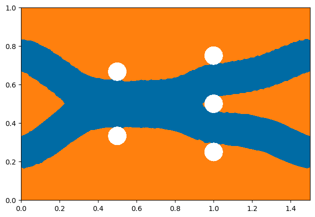
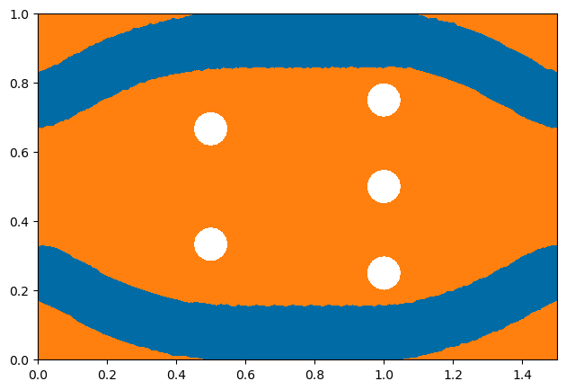
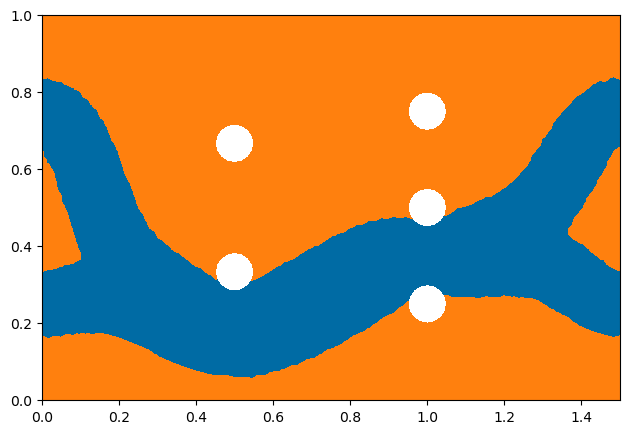
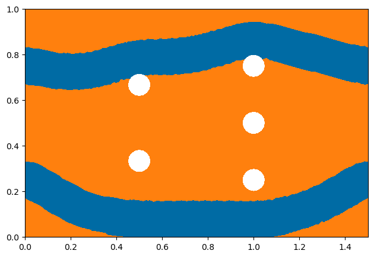
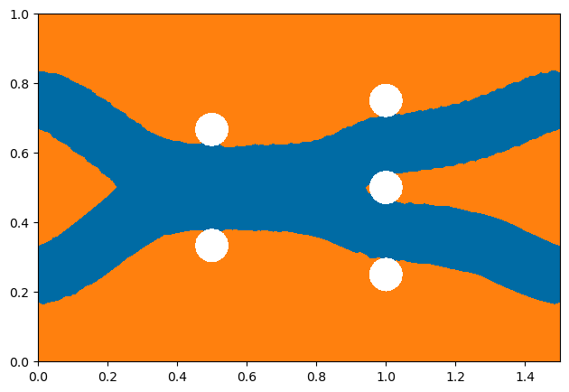
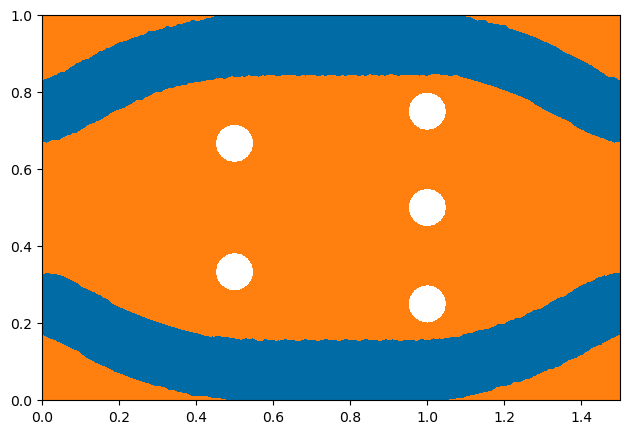
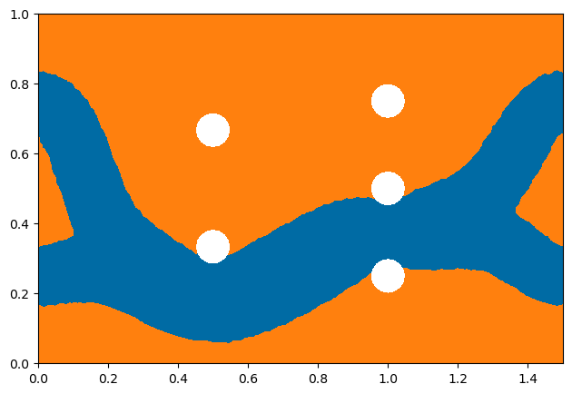
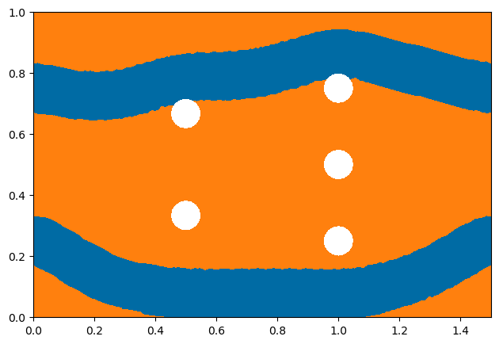

Computing Multiple Local Minimizers of Topology Optimization Problems - Five-holes Double-pipe#
Problem Formulation#
Usually, topology optimization problems attain multiple local minimizers. In this demo, we compute multiple local minimizers of the five-holes double-pipe optimization problem. This problem has been investigated previously, e.g., in Papadopoulos, Farrell, Surowiec - Computing multiple solutions of topology optimization problems and Baeck, Blauth, Leithaeuser, Pinnau, Sturm - A Novel Deflation Approach for Topology Optimization and Application for Optimization of Bipolar Plates of Electrolysis Cells. The problem can be written as follows
Here, \(u\) and \(p\) denote the fluids velocity and pressure, respectively. Moreover, \(\alpha\) denotes the viscous resistance or inverse permeability of the material, which is used to distinguish between fluid (where \(\alpha\) is low) and solid (where \(\alpha\) is high). As in the previous demos, e.g. Topology Optimization with Stokes Flow - Pipe Bend, \(\alpha\) represents a jumping coefficient between the considered materials, i.e., it is given by \(\alpha_\Omega(x) = \chi_\Omega(x)\alpha_\mathrm{in} + \chi_{\Omega^c}(x) \alpha_\mathrm{out}\), so that \(\Omega\) models our fluid and \(\Omega^c\) models the solid part.
On the outer boundary of the hold-all domain, Dirichlet boundary conditions are specified, indicating, where the fluid enters and exits. Moreover, the goal of the optimization problem is to minimize the energy dissipation of the fluid while achieving a certain volume of the fluid region. For more details on this problem, we refer the reader to Baeck, Blauth, Leithaeuser, Pinnau, Sturm - A Novel Deflation Approach for Topology Optimization and Application for Optimization of Bipolar Plates of Electrolysis Cells.
The generalized topological derivative for this problem is given by
Note
We do not specify the adjoint equation here, as this is derived automatically by cashocs as in previous demos.
Implementation#
The complete python code can be found in the file demo_deflation.py,
and the corresponding config can be found in config.ini.
The first part of the code is completely analogous to Topology Optimization with Stokes Flow - Pipe Bend and therefore we omit the details here and just state the corresponding code
from fenics import *
import cashocs
cfg = cashocs.load_config("config.ini")
mesh, subdomains, boundaries, dx, ds, dS = cashocs.import_mesh("mesh_deflation.xdmf")
v_elem = VectorElement("CG", mesh.ufl_cell(), 2)
p_elem = FiniteElement("CG", mesh.ufl_cell(), 1)
V = FunctionSpace(mesh, v_elem * p_elem)
CG1 = FunctionSpace(mesh, "CG", 1)
DG0 = FunctionSpace(mesh, "DG", 0)
alpha_in = 2.5 / (100 ** 2)
alpha_out = 2.5 / (0.005 ** 2)
alpha = Function(DG0)
psi = Function(CG1)
psi.vector().vec().set(-1.0)
psi.vector().apply("")
up = Function(V)
u, p = split(up)
vq = Function(V)
v, q = split(vq)
F = (
inner(grad(u), grad(v)) * dx
- p * div(v) * dx
- q * div(u) * dx
+ alpha * dot(u, v) * dx
)
For the Dirichlet boundary conditions, we specify that we have two inflows at left part of the boundary as well as two outflows on the right part, with the following expressions. Altogether, the boundary conditions are specified using the code
v_1 = Expression(('-144*(x[1]-1.0/6)*(x[1]-2.0/6)', '0.0'), degree=2)
v_2 = Expression(('-144*(x[1]-4.0/6)*(x[1]-5.0/6)', '0.0'), degree=2)
bcs = cashocs.create_dirichlet_bcs(V.sub(0), Constant((0, 0)), boundaries, [1])
bcs += cashocs.create_dirichlet_bcs(V.sub(0), v_1, boundaries, [3, 5])
bcs += cashocs.create_dirichlet_bcs(V.sub(0), v_2, boundaries, [2, 4])
Additionally, we specify the volume constraint by
vol_des = 0.5
We define the cost functional of our problem as well as its corresponding generalized topological derivative with the lines, where the penalization for the volume constraint is not considered here in comparison to Topology Optimization with Stokes Flow - Pipe Bend
J = cashocs.IntegralFunctional(
inner(grad(u), grad(u)) * dx
+ alpha * dot(u, u) * dx
)
dJ_in = Constant(alpha_in - alpha_out) * (dot(u, v) + dot(u, u))
dJ_out = Constant(alpha_in - alpha_out) * (dot(u, v) + dot(u, u))
Note
As in Topology Optimization with a Poisson Equation, the generalized topological derivative for this problem is identical in \(\Omega\) and \(\Omega^c\), which is usually not the case. For this reason, the special structure of the problem can be exploited with the following lines in the configuration file
[TopologyOptimization]
topological_derivative_is_identical = True
As in the previous demos, we have to specify the update routine of the level-set
function update_level_set, which we do as follows:
def update_level_set():
cashocs.interpolate_levelset_function_to_cells(psi, alpha_in, alpha_out, alpha)
That is, in the update_level_set function, the jumping coefficient is updated
with the interpolate_levelset_function_to_cells function.
The Deflation Approach#
To compute multiple local minizers of this topology optimization problem, we use
the approach presented in Baeck, Blauth, Leithaeuser, Pinnau,
Sturm - A Novel Deflation Approach for Topology Optimization and Application for Optimization
of Bipolar Plates of Electrolysis Cells. Here,
the distance to previously found local minimizers is penalized in the objective
function. The deflated topology optimization problem
DeflatedTopologyOptimizationProblem
can then be defined via the lines
dtop = cashocs.DeflatedTopologyOptimizationProblem(
F, bcs, J, up, vq, psi, dJ_in, dJ_out, update_level_set, config=cfg,
volume_restriction=vol_des
)
Note
The definition of the deflated topology optimization problem is similar to the definition of a usual topology optimization problem, see, e.g., Optimization of an Obstacle in Stokes Flow.
Note
The volume constraint is handled as in Topology Optimization with a Volume Constraint by a projection of the level-set function.
Now, we can solve the topology optimization problem with the following lines
delta = 1000000.
gamma = 0.7
dtop.solve(tol=1e-6, it_deflation=5, gamma=gamma, delta=delta, inner_rtol=0., inner_atol=0., angle_tol=1.0)
Here, it_deflation denotes the number of iterations of the deflation procedure, and
gamma and delta are the penalty parameters of the penalty function. The Parameters
gamma denotes the local support of the penalty function, and the parameter delta
is the penalty parameter. Overall, the code results in a maximum of two times
it_deflation solves of a topology optimization problem.
Note
The choice of the penalty parameters gamma and delta is not trivial and was chosen by
a numerical parameter studies. For a more detailed discussion about the choices of the
parameters, we refer to Baeck, Blauth, Leithaeuser, Pinnau,
Sturm - A Novel Deflation Approach for Topology Optimization and Application for Optimization
of Bipolar Plates of Electrolysis Cells.
Note
In density based topology optimization, the optimization problems reduces to an optimal
control problem. A deflated optimal control problem can be defined in a similar fashion
with
DeflatedOptimalControlProblem.
The solution of the optimization problem is then analog to the topology optimization
case.
Visualization#
We visualize the local minimizers found by the deflation procedure with
import matplotlib.pyplot as plt
from matplotlib import colors
import numpy as np
rgbvals = np.array([[0, 107, 164], [255, 128, 14]]) / 255.0
cmap = colors.LinearSegmentedColormap.from_list(
"tab10_colorblind", rgbvals, N=256
)
for i in range(0, len(dtop.control_list_final)):
plot(dtop.control_list_final[i], cmap=cmap, vmin=-1e-10, vmax=1e-10)
plt.tight_layout()
plt.savefig("./deflation_shape_{i}.png".format(i=i), bbox_inches='tight')
# plt.show()
and the results look as follows
 






